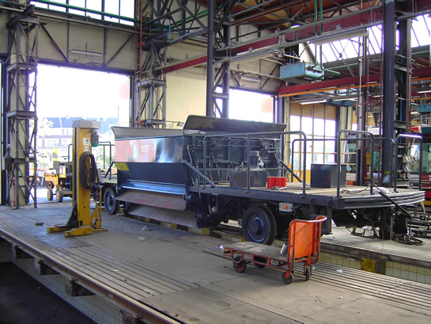
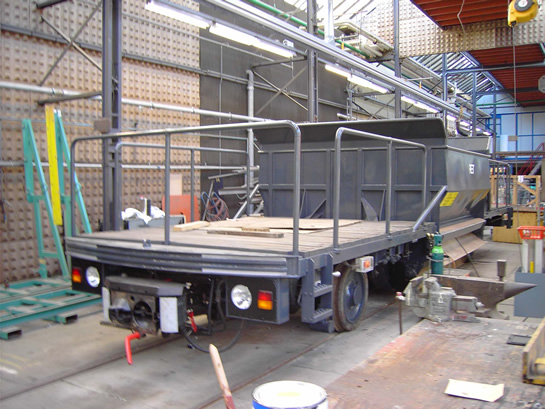
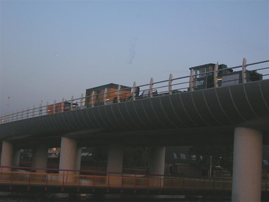
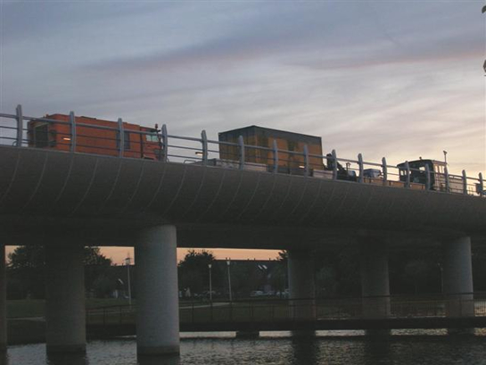

Verdachte situatie leidt tot vertragingen en meer nieuws...
- zondag 07 december 2008 17:49
- Geschreven door Joachim
Vanmiddag omstreeks 14.00 uur werd het metroverkeer rondom station Beurs stilgelegd. Reden was een verdachte situatie in een van de hallen van het metrostation. Hierop werd meteen het metroverkeer op de Calandlijn tussen de metrostations Eendrachtsplein en Blaak stilgelegd. Dit was ook het geval op de Erasmuslijn tussen het Centraal Station en metrostation Leuvehaven. Later werd ook station Eendrachtsplein niet meer aangedaan en werd er voor metro's richting Capelle a/d IJssel, Ommoord en Zevenkamp gekeerd op station Dijkzigt. Metro's richting Schiedam Centrum en Spijkenisse keerden op station Blaak, sporen 2 en 3.
Een van de kerende metrotreinen op station Blaak spoor 2 richting Ommoord (wagendienst 568, bestaande uit rijtuigen 5226 en 5224) kampte met een deurstoring, waardoor het lange tijd duurde voor het rijtuig uiteindelijk het station kon verlaten. Het rijtuig ging met overbrugde deuren buiten dienst richting remise 's-Gravenweg, omstreeks 14.55 uur.
Het metroverkeer op eerder genoemde locaties werd omstreeks 15.00 uur weer hervat. De vertragingen als gevolg van het oponthoud duurden voort tot na de avondspits. Reizigers werd gedurende de stremming geadviseerd gebruik te maken van tramlijn 1, 20, 23 of 25. De vertragingen liepen op tot meer dan 10 minuten.
Ballastwagens
Inmiddels zijn de ballastwagens 7301 en 7302 van het metrobedrijf op de Centrale Werkplaats aan de Kleiweg gereviseerd. Afgelopen week werden de ballastwagens afgeleverd op lijnwerkplaats Waalhaven. Welke andere werwagens meegestuurd zijn per vrachtwagen naar de Centrale Werkplaats voor een grondige revisie, is nog niet bekend.
Foto's met dank aan R.A. v/d Burg.

Een van de ballastwagen, nog ongenummerd, gereed voor vertrek.

De vaalgele kleur heeft plaats gemaakt voor een moderne, donkergrijze lak.
Kralingse Zoom
Vorige week vonden er op station Kralingse Zoom verfwerkzaamheden plaats. De muren van het metrostation aan de kant van spoor 1 en spoor 4 werden in de "normale" witte kleur gelakt. Eerder was hierop diverse malen graffiti aangebracht. Gedurende de werkzaamheden werd er door verschillende wagendiensten gebruik gemaakt van de vervangende sporen 2 of 3. Hierbij kon een kleine vertraging ontstaan.
Geluidsoverlast Spijkenisse
In de nachten van 16 op 17, 17 op 18 en 18 op 19 oktober werden er railslijpwerkzaamheden uitgevoerd op de metrolijn tussen de stations Spijkenisse Centrum en De Akkers in Spijkenisse. Dit in het kader van geluidsoverlast, dat geproduceerd werd door voorbijrijdende metro's. Omdat de railslijpwagen van de RET de eerder geconstateerde ribbels niet van de spoorstaaf kon slijpen, werd een grotere railslijpwagen uit Duitsland ingehuurd. De geluidsoverlast zou inmiddels verleden tijd zijn.
Foto's met dank aan Rik Roeske.

Overdag verbleef de railslijpwagen, samen met locomotief 6102, een platte wagen en een materiaalwagen op de keersporen van station De Akkers in Spijkenisse.

Geheel links de railslijpwagen, afkomstig uit Duitsland.
Voorrangssituatie President Rooseveltweg
Sinds enkele weken geldt er een vernieuwde voorrangssituatie op de President Rooseveltweg. Eerder werden er haaientanden tussen het spoor geplaatst, om zo de metro voorrang te laten verlenen aan het overig wegverkeer. Tot nog toe was dat alleen het geval tijdens normaal bedrijf via het rechterspoor.
Nu geldt de regel ook tijdens het rijden van linkerspoorbedrijf. Daarom zijn er extra haaientanden op het wegdek gezet en aan de AHOB-toestandseinen/negenogen langs het "linkerspoor" zijn voorrangsborden opgehangen.